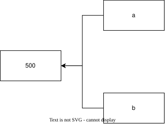

上一章我们知道了 print() 可以打印内容。但如果我们想让程序"记住"一些数据，就需要变量。
先理解计算机是怎么存储数据的。
你的计算机有内存（RAM）。内存可以想象成一个巨大的储物柜，里面有几十亿个小格子，每个格子能存一个很小的数据（1 字节），每个格子有一个编号，叫做内存地址。
地址 存储内容
0x0000 01001010
0x0001 00110110
0x0002 11001001
0x0003 00011101
... ...如果你要存一个数字 25，需要找到一块空闲的内存空间，把 25 的二进制形式放进去，然后记住这块空间的地址，以后才能找到它。
但让人去记 0x7ffe4b8a 这样的地址太反人类了。于是编程语言提供了变量这个机制：
age = 25这句话的意思是：
25 存进去ageage，Python 就去找到那个内存地址，把里面的值取出来变量不是"盒子"——这是常见的误解。
更准确的模型是：变量是一个标签，贴在内存中的某个对象上。
内存中的对象 25 ⟵ age（标签）为什么"盒子模型"不准确？因为后面我们会看到，多个变量可以贴在同一个对象上，就像给同一个东西贴多个标签。
age = 25| 字符 | 含义 |
|---|---|
a | 变量名的第一个字符 |
g | 变量名的第二个字符 |
e | 变量名的第三个字符 |
| 空格，Python 忽略 |
= | 赋值运算符：把右边的东西绑定到左边的名字上 |
| 空格 |
2 | 整数 25 的第一个数字 |
5 | 整数 25 的第二个数字 |
Python 执行这行代码的完整过程：
步骤1：看到 age → 这是一个标识符，后面有 =，说明这是赋值语句的左半部分
步骤2：看到 = → 赋值运算符，先计算右边
步骤3：看到 25 → 创建整数对象 25（实际上为了性能，小整数可能被预先创建了）
步骤4：将名字 age 绑定到整数对象 25 上
步骤5：这条语句执行完毕，没有返回值（或者更准确地说，赋值语句不产生值）关键认知：= 的右边先执行。Python 总是先把右边的表达式算出结果，然后才把结果绑定到左边的变量名。
这解释了我们上一章提到的多重赋值为什么能直接交换：
a, b = b, a执行过程：
步骤1：计算右边 b, a → 得到一个元组 (b, a)，比如 b=10, a=20，结果是 (10, 20)
步骤2：这个元组 (10, 20) 是"临时的"，和原来的 a, b 已经没有关系了
步骤3：把左边 a, b 分别绑定到 10 和 20
步骤4：现在 a=10, b=20，交换完成id() 函数id() 函数返回一个对象的内存地址。
x = 100
print(id(x))
140725631307992这个数字就是 100 这个整数对象在内存中的地址。每次运行可能不一样，这不重要。
重要的是，我们可以用 id() 来追踪变量到底指向谁：
a = 100
b = 100
print(id(a))
print(id(b))
140725631307992
140725631307992你会发现 id(a) 和 id(b) 可能是一样的。
为什么说"可能"？因为 Python 会预先创建一些小整数（-5 到 256）供反复使用，以节省内存。所以：
a = 100 # 小整数，Python 复用了已有的 100 对象
b = 100 # 还是那个 100 对象
print(id(a) == id(b)) # True
a = 1000 # 大整数，Python 创建了一个新的 1000 对象
b = 1000 # 又创建了一个新的 1000 对象
print(id(a) == id(b)) # 可能是 False 也可能是 True（取决于 Python 的实现和运行方式）
True
True这是实现细节，不影响你写代码。 你只需要知道：每次 = 右边的表达式被计算时，会产生一个对象。这个对象可能被复用，可能是全新的。不要依赖这个行为来写代码。
x = 10
print(id(x)) # 地址 A
x = 20
print(id(x)) # 地址 B，不一样了
140725631305112
140725631305432
注意：不是"把 10 改成 20"，而是：
20x 从旧的 10 上撕下来，贴到 20 上10 没有别的变量指向它，它会被垃圾回收整数是不可变对象，一旦创建，它的值就不能改变。你只能让变量指向一个新对象，不能改变旧对象的内容。
a = 500
b = a这条语句的执行过程：
步骤1：a = 500 → 创建整数 500，把标签 a 贴上去
步骤2：b = a → 找到 a 指向的对象（500），把标签 b 也贴到同一个对象上此时：

两个标签贴在同一个对象上。
验证：
a = 500
b = a
print(id(a) == id(b))
True重要实验：
a = [1, 2, 3] # 列表是可变对象
b = a # b 也指向同一个列表
b.append(4) # 通过 b 修改列表
print(a) # [1, 2, 3, 4] ← a 也变了！
[1, 2, 3, 4]因为 a 和 b 指向的是同一个列表对象。通过 b 修改它，a 看到的当然也变了。
对比：
a = [1, 2, 3]
b = a
b = [1, 2, 3, 4] # 把 b 贴到一个全新的列表上
print(a) # [1, 2, 3] ← a 没变
[1, 2, 3]第二行 b = a 让 b 和 a 指向同一个列表。
第三行 b = [1, 2, 3, 4] 创建了一个全新的列表，把 b 从旧列表上撕下来贴到新列表上。a 还贴在旧列表上，所以 a 没变。
规则一：只能包含字母、数字、下划线
name = "合法"
my_name = "合法"
_private = "合法"
user123 = "合法"
my-name = "非法" # SyntaxError，连字符不允许
my name = "非法" # SyntaxError，空格不允许
123abc = "非法" # SyntaxError，不能以数字开头 File "wrong_name.py", line 6
my-name = "非法" # SyntaxError，连字符不允许
^^^^^^^
SyntaxError: cannot assign to expression here. Maybe you meant '==' instead of '='?
File "wrong_name.py", line 7
my name = "非法" # SyntaxError，空格不允许
^^^^
SyntaxError: invalid syntax
File "wrong_name.py", line 8
123abc = "非法" # SyntaxError，不能以数字开头
^
SyntaxError: invalid decimal literal为什么不能以数字开头？因为 Python 解析器看到数字就会开始解析数字字面量：
123abc → Python 先看到 1，开始解析数字
看到 2，继续解析数字
看到 3，继续解析数字
看到 a，这不是数字的一部分→报错规则二：不能使用 Python 的关键字
if = 10 # 错误
class = 10 # 错误
for = 10 # 错误
True = 10 # 错误
None = 10 # 错误关键字是 Python 语法的一部分，有特殊含义，不能被重新定义。
规则三：区分大小写
name = "小明"
Name = "小红"
NAME = "小刚"
print(name)
print(Name)
print(NAME)
小明 小红 小刚
这是三个完全不同的变量。首字母大写、全大写、全小写是三个独立的名字。
约定不是强制规则，但整个 Python 社区都在遵守，你不遵守代码会显得格格不入。
约定一：变量名用小写，单词间用下划线
my_name = "正确"
user_age = "正确"
total_count = "正确"
myname = "可以，但可读性差"
MyName = "这是驼峰命名，Python 中不推荐用于变量"这种小写加下划线的风格叫 snake_case（蛇形命名法），因为单词像用下划线串起来的长蛇。
约定二：常量用全大写
PI = 3.14159
MAX_USERS = 100
DEFAULT_TIMEOUT = 30全大写表示"这个值在整个程序中不应该被修改"。注意，Python 并不能强制阻止你修改它，这只是约定。
约定三：以单下划线开头表示"内部使用"
_internal = "这是内部变量，外部代码不应该直接访问"这是告诉其他开发者"这个变量是我内部用的，你别碰"。
约定四：以双下划线开头和结尾的是 Python 的特殊方法
__init__
__str__
__name__这种叫"魔术方法"（dunder methods），是 Python 自己用的。不要自己发明这种名字。
x = 10
print(type(x))
x = "Hello"
print(type(x))
<class 'int'>
<class 'str'>变量本身没有类型。类型是对象的属性。
变量只是标签，贴在什么类型的对象上，它就指向什么类型。同一个变量可以先后贴在不同类型的对象上。
这就是"动态类型"的真正含义：变量可以在运行时改变指向的对象的类型。
对比 C 语言：
int x = 10; // x 被声明为 int 类型，永远只能存整数
x = "Hello"; // 编译错误，类型不匹配Python：
x = 10 # x 指向整数
x = "Hello" # 完全可以，x 现在指向字符串x = 10
print(x)
del x
print(x)10
Traceback (most recent call last):
File "delete.py", line 4, in <module>
print(x) # NameError: name 'x' is not defined
^
NameError: name 'x' is not defineddel x 做了什么：
x 标签x 不再存在10 这个对象没有其他标签指向它，它会在某个时刻被垃圾回收del 不删除对象，它删除的是变量名（标签）。对象由垃圾回收机制处理。
a = b = c = 0执行过程：
步骤1：右边 0 → 创建整数 0
步骤2：从右向左依次绑定：c = 0, b = 0, a = 0
步骤3：最终 a, b, c 都指向同一个整数对象 0验证：
a = b = c = 0
print(id(a) == id(b) == id(c))
True多变量解包：
x, y, z = 1, 2, 3执行过程：
步骤1：右边 1, 2, 3 → 自动打包成元组 (1, 2, 3)
步骤2：左边 x, y, z → 解包：x 绑定到 1, y 绑定到 2, z 绑定到 3左右数量必须一致：
x, y = 1, 2, 3 # 错误：左边 2 个，右边 3 个
x, y, z = 1, 2 # 错误：左边 3 个，右边 2 个# 情况一：变量从未被定义
print(non_existent)
# 情况二：变量被定义为 None
result = None
print(result)Traceback (most recent call last):
File "wrong_variety.py", line 2, in <module>
print(non_existent) # NameError: name 'non_existent' is not defined
^^^^^^^^^^^^
NameError: name 'non_existent' is not defined
None这两个完全不同：
NameError：名字根本不存在，Python 不认识None：名字存在，指向一个叫 None 的对象，表示"故意为空"| 概念 | 说明 |
|---|---|
| 变量的本质 | 贴在内存对象上的标签（不是盒子） |
= 赋值 |
把右边的表达式结果绑定到左边的名字上 |
| 对象 vs 变量 | 对象存数据，变量是指向对象的标签 |
id() |
查看对象的内存地址 |
| 重新赋值 | 标签从一个对象移到另一个对象 |
| 多标签 | 多个变量可以指向同一个对象 |
| 不可变对象 | 值不能改变，只能让变量指向新对象（整数、字符串等） |
| 可变对象 | 值可以就地改变（列表、字典等） |
| 动态类型 | 变量可以指向任何类型的对象 |
del |
删除变量名，不删除对象 |
None |
特殊的空值对象 |